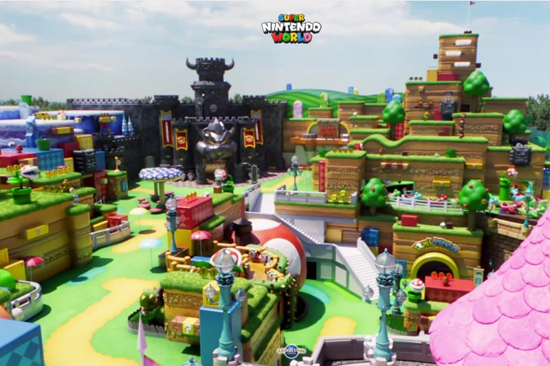
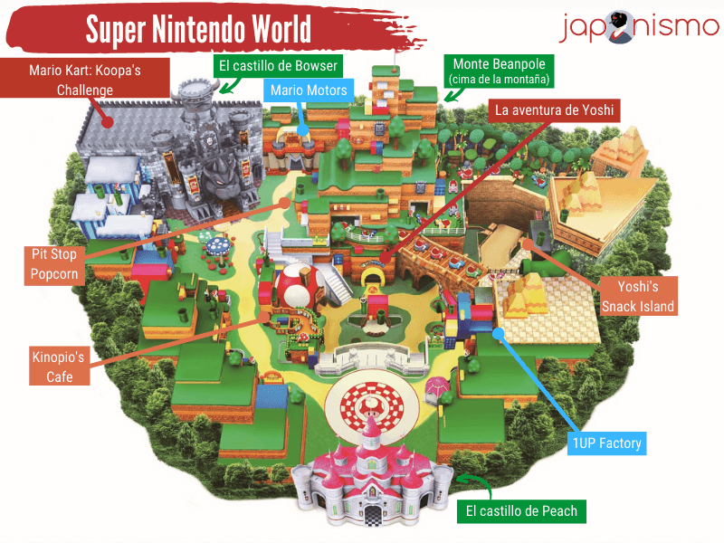
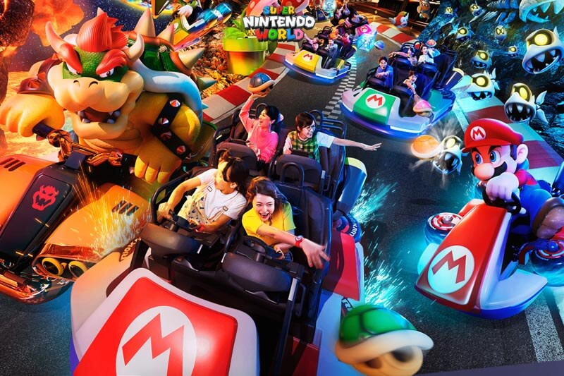
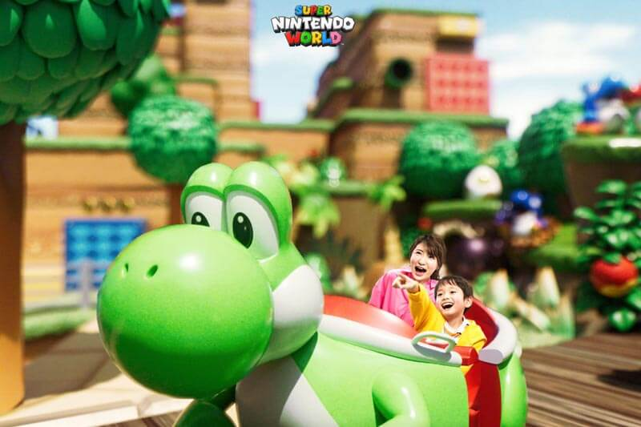
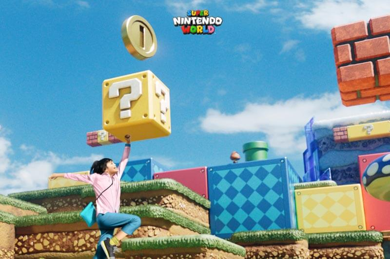
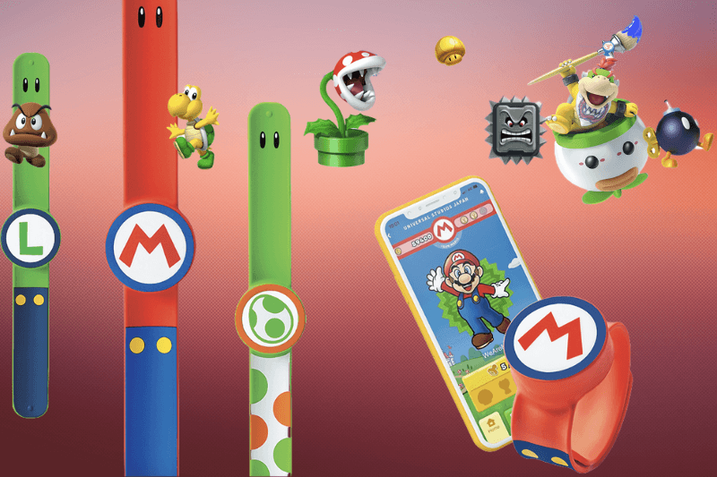
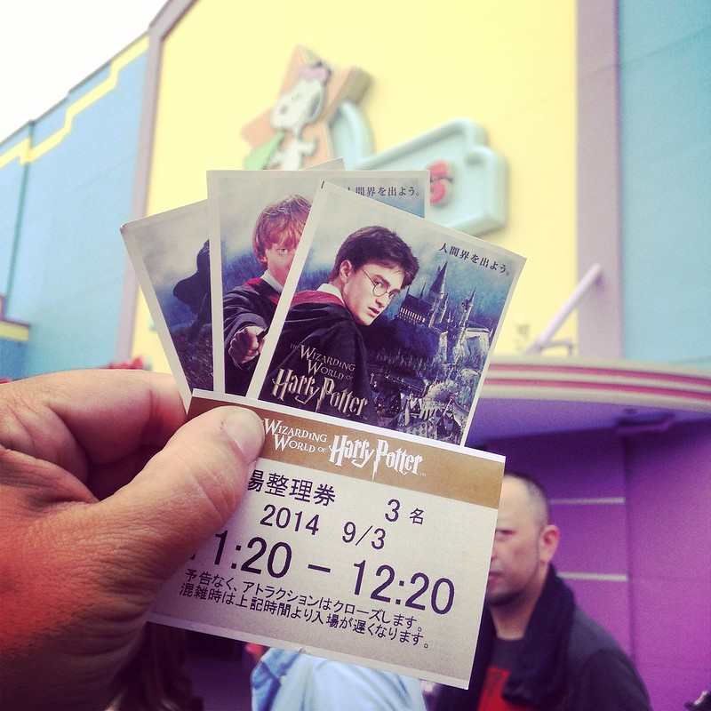

Super Nintendo World: El parque temático de Mario en Osaka
Cuando se anunció en 2015 un acuerdo entre Nintendo y Universal Studios Japan para construir Super Nintendo World, todos los fans de Mario y de Nintendo aplaudieron la decisión. Pero ni en nuestros mejores sueños podíamos imaginar que el resultado final fuera tan espectacular. Sin duda, Super Nintendo World será visita obligada cuando estés por Osaka.
Este parque es, en realidad, una zona temática situada en el interior del parque temático Universal Studios Japan en Osaka. Y ayudará a que USJ siga atrayendo visitantes, sumándose así a otras zonas temáticas como la dedicada a los Minions o a Harry Potter. Además, una vez que pagues la entrada para el parque, tendrás acceso sin pagar extra a toda esta nueva zona dedicada a Nintendo.
Super Nintendo World dará vida a mundos, aventuras y personajes clásicos de Nintendo. Aunque se basa especialmente en los juegos de Super Mario, Mario Kart y y Super Mario World 2: La isla de Yoshi. De esta forma, consigue que los visitantes sientan que están jugando dentro de sus juegos favoritos de Nintendo. En un futuro habrá también con una zona dedicada al juego Donkey Kong, uno de los clásicos de Nintendo de 1981, y en el que Mario hizo su primera aparición.
La construcción de Super Nintendo World comenzó en junio de 2017 y tendría que haberse inaugurado en verano de 2020, a tiempo para los Juegos Olímpicos de Tokio 2020. Sin embargo, su inauguración se retrasó al 4 de febrero de 2021 por la pandemia del coronavirus. Desafortunadamente, debido al estado de emergencia decretado en varias prefecturas en febrero de 2021, la inauguración oficial se retrasó nuevamente. Finalmente el parque quedó oficialmente inaugurado el 18 de marzo de 2021, visto que la situación sanitaria había mejorado y había terminado el estado de emergencia.
Toda la zona temática de Super Nintendo World se encuentra en el extremo norte del parque, entre la zona The Wizarding World of Harry Potter y Water World. Para entrar a Super Nintendo World tendrás que pasar por una tubería que te llevará hasta el castillo de la Princesa Peach. El castillo está decorado con cuadros y melodías de Super Mario 64 y, cuando lo atravieses, te dará acceso al nivel 2 del Mushroom Kingdom. Si has jugado a Super Mario en España lo conocerás como Reino Champiñón, o como Reino de los Hongos si lo has jugado en Latinoamérica.
Qué esperar de Super Nintendo World
Super Nintendo World, pese a que no está oficialmente abierto aún, tiene su propia página web oficial. En ella puedes disfrutar de una especie de «tour virtual» por sus diferentes zonas. Con él, te sientes casi como si estuvieras dentro de uno de los juegos de Super Mario. Y como no nos aguantamos las ganas de ir, le hemos echado un vistazo y hemos recopilado lo más interesante en este post.
A continuación, te contamos brevemente qué encontrarás en Super Nintendo World. De momento sabemos que habrá dos atracciones, de unos cinco minutos de duración cada una de ellas. Una será ideal para los más pequeños y otra para los más mayores. Además, habrá un restaurante, un puesto de snacks y un puesto de palomitas, así como dos tiendas con todo tipo de productos de Nintendo. Así que cuidado con las tarjetas de crédito, que pueden sufrir.
Te dejamos con un mapa de la zona, para que te hagas una idea de dónde encontrarlo todo.
Mario Kart: Koopa’s Challenge
«Koopa» es el nombre que recibe Bowser en Japón, el archienemigo de Mario en la saga de videojuegos de Nintendo. Así que la traducción de esta atracción sería «Mario Kart: El reto de Bowser».
Esta atracción, que se inspira en la franquicia de Mario Kart, es una especie de montaña rusa interactiva en la que se usa tecnología de realidad aumentada. Durante la atracción, en la que se han recreado las carreras del famoso juego, debes lanzar caparazones de tortuga a tus enemigos. Y, tras visitar varios mundos de Mario Kart, tienes que pasar por la línea de meta junto a Mario y Peach.
El objetivo de esta atracción es hacerte recordar la emoción que sientes al jugar en las carreras de Mario Kart, así que… ¡prepárate!
La aventura de Yoshi
«La aventura de Yoshi» es una atracción de tipo omnimover, un recorrido de tren que nunca para y que circula a baja velocidad, ideal para los más pequeños. Está inspirada en el personaje de Yoshi y, precisamente, te subirás a Yoshi para buscar al Captain Toad. La atracción es una especie de búsqueda del tesoro relajada y apta para toda la familia.
La atracción destaca por las increíbles vistas que ofrece del Reino Champiñón (o Reino de los Hongos). Así que aunque ya no seas un niño, no te la pierdas si quieres disfrutar de esas vistas.
Con las pulseras «Power-Up Band» podrás disfrutar de la zona temática de Super Nintendo World al máximo. Estas pulseras te permiten participar en una especie de búsqueda del tesoro interactiva. En realidad son una serie de «actividades» con las que deberás derrotar a Bowser y hacerte con el Champiñón Dorado.
Además, también podrás coleccionar monedas, llaves y artículos virtuales golpeando bloques de interrogación y bloques de notas, usando bloques POW, etc. La idea es que sientas que estás en el interior de uno de los juegos de Mario. Una manera divertida de hacer más «intensa» y «real» la visita al parque y que nos morimos de ganas de probar.
Preguntas frecuentes
¿Cuándo abre Super Nintendo World?
Super Nintendo World tendría que haber abierto sus puertas en verano de 2020, coincidiendo con los Juegos Olímpicos de Tokio 2020. Sin embargo, debido a la pandemia de la Covid-19, su inauguración se retrasó hasta el 4 de febrero de 2021. No obstante, debido al estado de emergencia en la ciudad de Osaka, la inauguración oficial se ha vuelto a retrasar indefinidamente. En cuanto la situación sanitaria lo permita el parque inaugurará Super Nintendo World, aunque de momento no se sabe la fecha exacta.
¿Y cuándo abre la zona dedicada a Donkey Kong?
En julio de 2019 se filtraron unos modelos oficiales de Super Nintendo World en los que aparecían imágenes de una zona inspirada en otro de los juegos clásicos de Nintendo: Donkey Kong. En noviembre del mismo año se confirmó la expansión de Super Nintendo World con una zona dedicada a Donkey Kong, aunque aún no se sabe mucho más.
¿Cuánto cuestan las entradas?
Super Nintendo World se encuentra en el interior de Universal Studios Japan y se trata de una de las múltiples zonas temáticas del parque. Es por ello que para visitar esta zona dedicada a Mario sólo tendrás que comprar la entrada de un día de Universal Studios Japan, para tener acceso a todas las zonas y atracciones. No puedes comprar una entrada específica sólo para visitar Super Nintendo World; tienes que comprar la entrada del parque.
El precio de las entradas de Universal Studios Japan varía según la edad, pero te los dejamos anotados aquí, con su valor aproximado en euros y dólares estadounidenses:
Menores de 4 años:
Gratis.Niños de 4 a 11 años:
5400 yenes (43 € / $52) por un día o 10 500 yenes (83 € / $100) por dos días.De 12 a 65 años:
7800 yenes (62 € / $75) por un día o 15 400 yenes (122 € / $147) por dos días.De 65 años en adelante:
7100 yenes (56 € / $68).Recuerda que puedes comprar tus entradas a través de nuestro proveedor de confianza y así ayudarnos a mantener Japonismo con vida y con toda la información actualizada sobre Japón. Simplemente pincha en el enlace y te redirigiremos a la página de compra de entradas y pases específica de Universal Studios Japan.
¿Qué es la pulsera Power-Up Band?
La Power-Up Band es una pulsera para disfrutar más si cabe de Super Nintendo World. Con esta pulsera, podrás interactuar directamente con distintos elementos de esta zona temática y sentirte como si estuvieras dentro de uno de los juegos de Mario. Podrás coleccionar monedas virtuales, tocar bloques de interrogación y de notas… y un montón de cosas más.
Además, si te bajas la aplicación oficial de Universal Studios Japan en tu móvil podrás ver tu puntuación, cuántas monedas virtuales tienes, cuántos retos has completado, etc. Eso sí, es importante recalcar que no es obligatorio adquirir la pulsera. Puedes disfrutar de Super Nintendo World sin ella sin ningún tipo de problema. Pero si quieres interactuar con el espacio como lo harías en un videojuego, la necesitarás.
La pulsera Power-Up podrá adquirirse en la Super Star Plaza, en el interior de Super Nintendo World. Eso sí, aun se desconoce qué precio tendrá.
¿Qué es el Timed Entry Ticket y cómo lo consigo?
Como sucede con otras zonas temáticas de Universal Studios Japan, el acceso a Super Nintendo World estará controlado. Eso significa que, si hay mucha gente en el parque, no podrás entrar libremente a esta zona, sino que tendrás que acceder con un ticket especial llamado «Timed Entry Ticket».
Este ticket te permite entrar a una zona temática específica, como Super Nintendo World, a una hora concreta. Por ejemplo, si tu ticket pone 11:20 – 12:20 (como en la imagen inferior), eso significa que puedes entrar a esa zona temática entre las 11:20 horas y las 12:20 horas. Sin embargo, esto sólo es la franja horaria en la que se te permite la entrada, pero no significa que sólo puedas estar una hora dentro. Al contrario, una vez dentro, puedes quedarte todo el tiempo que quieras.
Este «Timed-Entry Ticket» se incluye en algunos Express Pass y también puede conseguirse sin coste y de manera totalmente gratuita de varias maneras. Puede ser a través de algunas agencias de viajes (especialmente del sudeste asiático), a través de la aplicación móvil de Universal Studios Japan o directamente en unas máquinas específicas dentro del parque, una vez hayas entrado.
En este último caso, una vez dentro del parque, tienes que ir directo al Central Park (número 65 en el mapa oficial del parque). Allí verás unas máquinas con las franjas horarias disponibles. Sólo tienes que marcar la hora que desees de las disponibles, escanear los códigos de barras de las entradas de todas las personas de tu grupo y listo. La máquina imprimirá una entrada con tu hora de acceso. Esta entrada es la que tienes que enseñar para acceder a Super Nintendo World.
Si la afluencia del parque es menor, puede ser que no sea necesario tener un «Timed-Entry Ticket» para acceder a Super Nintendo World. En nuestro caso, eso mismo nos pasó cuando visitamos la zona temática de Harry Potter. Por la mañana sí tuvimos que sacar un ticket especial de hora, pero en cambio por la tarde la zona era de libre acceso, con lo que pudimos volver a entrar y pasear por Hogsmeade y Hogwarts de noche.
¿Qué es el Universal Express Pass?
El Universal Express Pass es un pase especial e independiente de la entrada general que te permite saltarte la cola en algunas atracciones, según el pase que escojas. Normalmente hay tres tipos de pases, aunque van cambiando con el tiempo así que siempre es necesario mirar la página web oficial o la página de nuestro proveedor de confianza antes de comprarlos.
Los Universal Express Pass se pueden comprar en las oficinas de venta de billetes de JR, en las tiendas de conveniencia Lawson, en algunas agencias de viajes y hoteles seleccionados, en las propias taquillas del parque (aunque tendrás que ir pronto, porque se agotan rapidísimo) o a través de nuestra tienda. Si lo haces a través de nuestra tienda, nos ayudas a mantener Japonismo vivo y con toda la información actualizada sobre Japón. No temas, que nuestro proveedor es una de las agencias oficiales de USJ.
Si vas a ir un día en el que el parque está muy lleno (verano, vacaciones escolares, festivos o similares), es recomendable intentar comprarlos antes, ya que si no tendrás que ir muy pronto a hacer cola a las taquillas del parque. Y ni siquiera así te aseguras poder comprar uno porque… ¡suelen volar! Si quieres adquirirlos, cómpralos antes y ten en cuenta que tendrás que comprar la entrada general y el pase que quieras, ya que son dos compras diferentes.